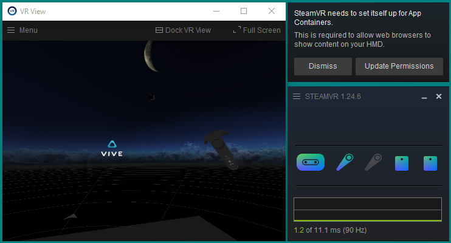
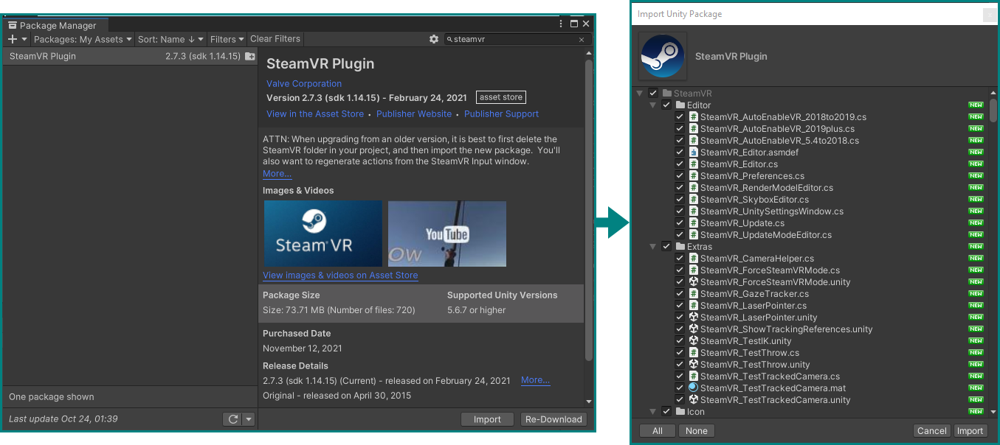

Interaction in VR
Let's now dig into actually using VR with Unity. For that we need to add some additional packages to Unity which will be specific to the hardware we're using for this tutorial — the HTC Vive Pro Eye, using SteamVR. You should verify the proper connection of the headset and the pairing of controllers by opening the Steam application and launching SteamVR. It may ask you to Update Permissions on first launch — do it.
If everything works, you can see the empty VR space and your controller(s) if you put on the headset, and in an optional desktop view of the VR environment you can enable from the menu button in the SteamVR window:

A new project
Let's first of all create a new Unity 3D project with the hub, like before. You can close the one from the previous tutorial, we won't be needing it anymore. Set up the new project's window like we did for the first tutorial, or to your own liking.
Reusing the old project
You can also reuse your old project in this case, just delete both the new objects and assets you created by right-clicking them in the hierarchy and project browser, respectively, and selecting "delete." Or you can also keep them around, as long they're deactivated in the hierarchy — it's up to you how much clutter you can tolerate vs. how much time you want to save. It can be good to have a working reference around to compare.
Installing and importing Packages
In the Unity editor's menu bar, go to Window → Package Manager, which will open a new floating window. Selecting My Assets from the Packages drop-down menu at the top, type in steamvr in the search box and you should have the SteamVR Plugin appear — import it with the Import button below. A new window will present itself to let you select parts of the package, but we will just keep everything checked and hit Import again.
The Asset Store
If SteamVR can not be found anywhere in the Package Manager, it may not be added yet to this Unity account. In that case go to the Unity Asset store, find it there, and add it to "your assets."

During this, some dialog boxes may appear — just confirm what they want. SteamVR may ask to accept changes to the project's settings — Accept All and it will be very happy. You can close the package manager windows now.
Having the basics for VR installed with the SteamVR package, we now need an additional one for the eye tracker. You could download it from the developer's website, but we have already put it in a folder on your desktop.
To import a package (or an asset) that is not listed in the package manager, you need to go to Assets → Import Package → Custom Package… in the menu bar. Navigate to the packages folder in the workshop folder and locate Vive-SRanipal-Unity-Plugin.unitypackage under packages → SDK-v1.3.3.0 → SDK → 02_Unity. Confirm with Open and you'll be presented with the same interface as before to select only parts of it — again, keep all checked and Import.
Adding VR basics
Now that we have the necessary packages all imported, we can add the bare necessities to our scene for VR to function.